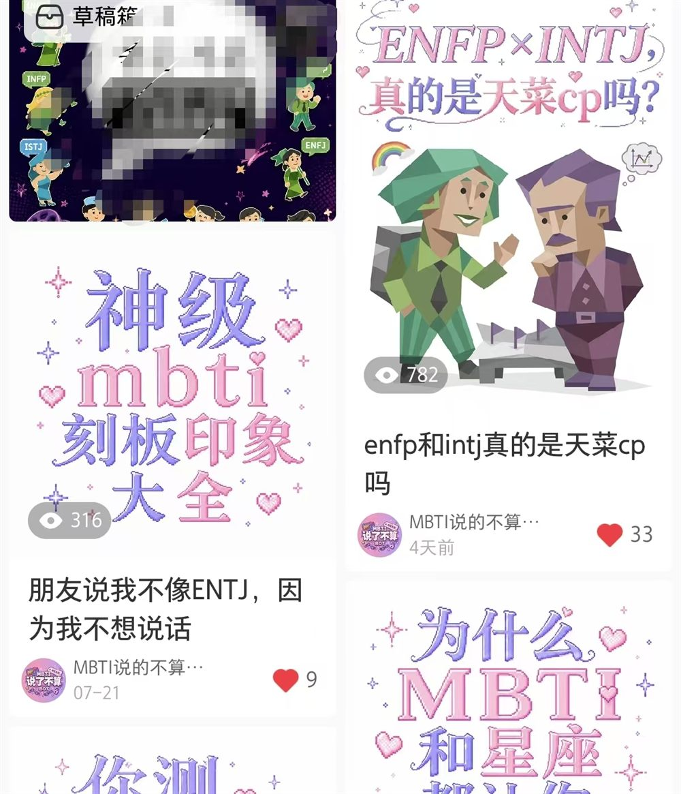
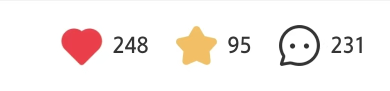

NO.02 / 2026.07-至今
MBTI说了不算
人格议题探索实验
Content Lab
01 / 项目背景
为什么开始这个实验？
受到MBTI文化在年轻用户群体中的流行影响，我希望通过内容创作探索人格标签背后的真实意义。
相比简单传播MBTI标签，我更关注：
- 人格是否真的能够定义一个人？
- 为什么用户容易产生人格认同？
- 网络上的MBTI讨论为什么具有传播性？
因此创建账号“MBTI说了不算”，尝试用内容表达打破固定印象。
02 / 内容方向
三种内容观察角度
刻板印象拆解
分析网络中常见的人格标签，通过案例讨论不同人格类型背后的复杂性。
用户投稿与讨论
收集用户对于MBTI、人际关系和人格认知的看法，提高用户参与感。
热点内容探索
结合年轻用户关注的话题，尝试不同标题、视觉形式和内容表达方式。
03 / 我的实践过程
一个人完成从定位到发布的内容实验
独立完成账号定位、选题策划、文案撰写、视觉设计以及内容发布。
实践内容包括：
- 账号定位设计
- MBTI相关选题研究
- 图文内容制作
- 热点话题包装
- 用户反馈观察
- 内容形式迭代测试
04 / 数据与成果
账号目前处于早期运营阶段，通过持续测试不同内容方向积累运营经验。
成果展示：
- 完成多组MBTI主题内容创作
- 探索人格话题的用户兴趣点
- 部分内容获得用户互动反馈
内容运营案例补充
- 爆款图文展示
- 高互动内容截图
- 数据表现截图
补充案例图片位置
05 / 项目展示区域
手账照片墙

